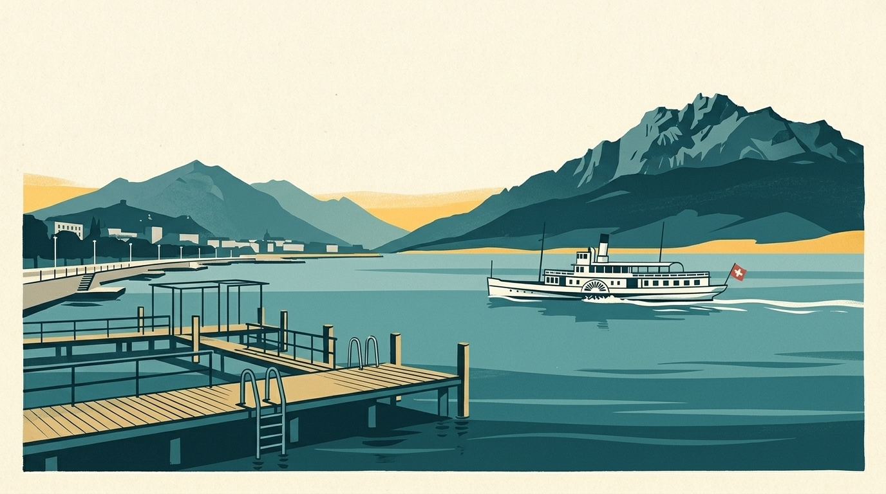

En bref
Mon Lac suit 18 plages du lac des Quatre-Cantons, avec la température de l’eau à 70 cm sous la surface quand elle est calculée. Voici la liste, puis les adresses utiles autour de l’eau.

Le lac des Quatre-Cantons couvre environ 113,6 km², descend jusqu’à 214 m et se trouve à 434 m d’altitude.
Les 18 plages suivies du lac des Quatre-Cantons
Entre parenthèses : la température du matin du 14 novembre 2026, à 70 cm sous la surface (modèle Alplakes).
- Lucerne – Seebad (8,6 °C)
- Lucerne – Ufschötti (8,1 °C)
- Lucerne – Tribschen (8,8 °C)
- Lucerne – Lido (10,8 °C)
- Horw – Seebad (10,3 °C)
- Horw – Winkel (10,7 °C)
- Hergiswil (10,8 °C)
- Stansstad (10,2 °C)
- Meggen – Benzeholz (10,9 °C)
- Merlischachen (10,2 °C)
- Greppen (10,5 °C)
- Buochs-Ennetbürgen (10,6 °C)
- Beckenried (11,3 °C)
- Vitznau – Lido (11,0 °C)
- Strandbad Cholplatz (11,3 °C)
- Gersau – Kindli (11,3 °C)
- Brunnen (10,5 °C)
- Bauen (11,4 °C)
Entrée, saison et accès
Prix et dates relevés le 13 novembre 2026 sur les sources ci-dessous, pour la saison 2026 : à confirmer sur le site de chaque bain avant d’y aller.
- Seebad Luzern : ouvert dès le 1er mai, saison en principe jusqu’au Bettag (20 septembre 2026), fermé par mauvais temps ; entrée adulte à 8 francs, 4 francs pour les 6 à 15 ans.
- Lido Luzern (établissement distinct, payant) : entrée adulte à 8 francs en semaine et 10 francs le week-end ; 5 francs pour les moins de 16 ans, gratuit pour les moins de 6 ans.
Un verre ou un repas au bord du lac des Quatre-Cantons
- Seebad Luzern, Lucerne : Bar et bistro en plein air dans le bain historique du centre-ville ; le restaurant reste ouvert le soir après la fermeture du bain à 20 h.
- Seerestaurant Lido, Lucerne : Terrasse et bar au bord du lac, au Lido de Lucerne ; d’après l’annuaire, ouvert du mercredi au dimanche.
- Lido Weggis, Weggis : Bain construit en 1919, avec un restaurant et une terrasse d’été côté lac.
- Seerestaurant Lützelau, Weggis : En première ligne au bord de l’eau, avec terrasse et bar.
- Quai 2, Brunnen : Café, restaurant et bar sur la promenade du lac, avec le Lakeside, une terrasse directement sur l’eau.
- Fischli am See, Bauen : Terrasse au bord de l’eau, sur la Voie suisse.
- Seerestaurant Schlüssel, Ennetbürgen : Pizzeria et restaurant avec terrasse directement sur le lac et place d’amarrage pour les bateaux.
Louer sur l’eau du lac des Quatre-Cantons
Chaque fiche renvoie au site du loueur quand il existe. Horaires et prix changent : à confirmer auprès de lui.
- Saunaboot s’Berti, Lucerne (Kastanienbaum), près de Lucerne – Lido : Bateau-sauna sur le lac des Quatre-Cantons, amarré dans le port au pied du Seehotel Kastanienbaum.
À lire aussi
- Température de l’eau du lac des Quatre-Cantons : d’où viennent les chiffres
- Saunas flottants et bateaux-saunas en Suisse : 6 adresses sur quatre lacs
L’eau du Léman en ce moment
La température de chaque plage est dans l’app Mon Lac, mise à jour toutes les trois heures.